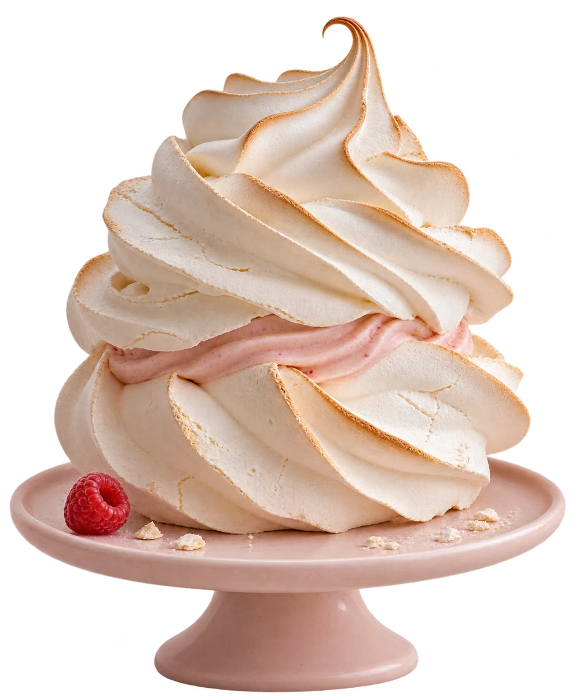
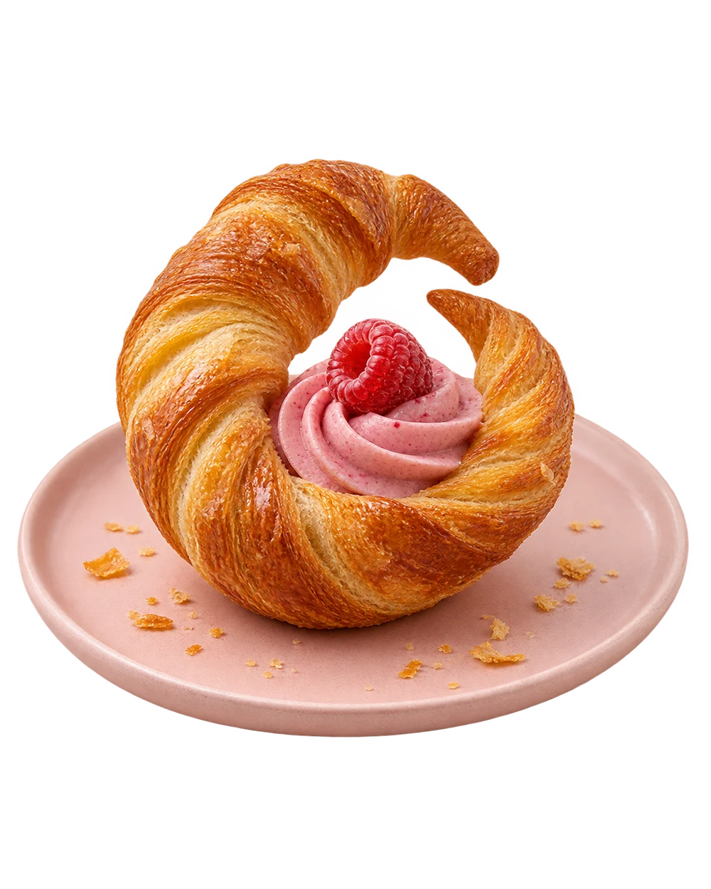
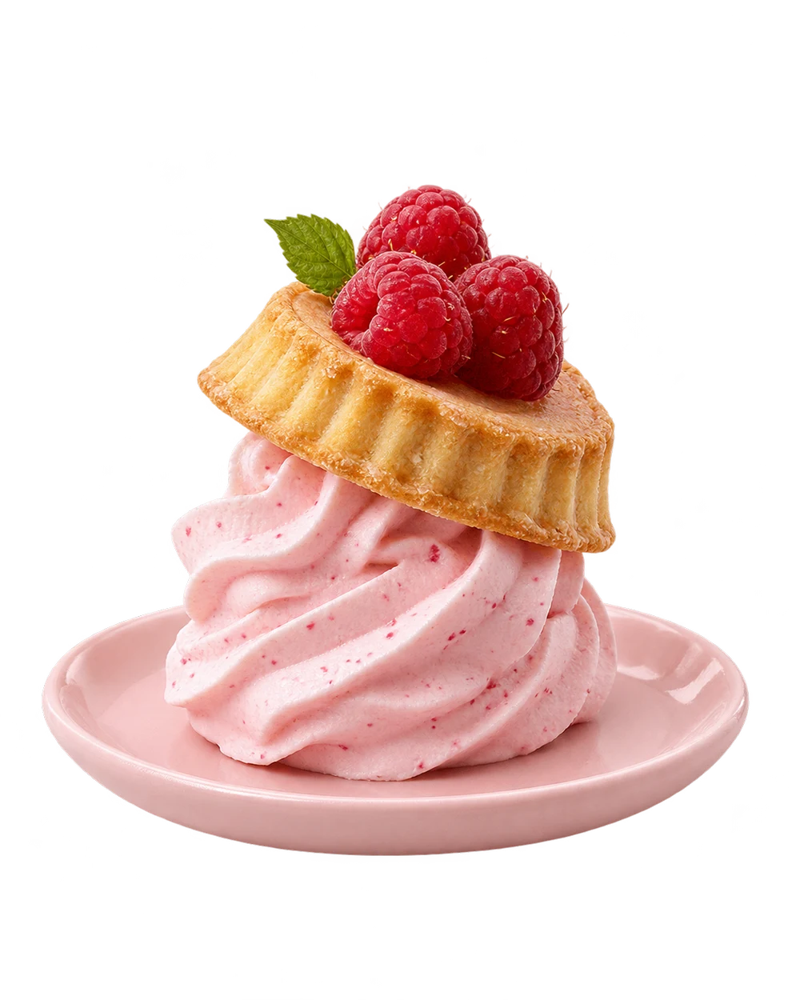

01
Giant
meringue
What is inside?
Toasted meringue, pink cream and too much confidence.
One enormous meringue.
Cutting it is another matter.

Pick up to six pastries.
The tray can take it.
Toasted meringue, pink cream and too much confidence.

02Flaky pastry, raspberry and one extra turn.

03Cream, fruit and a crust doing its own thing.
Plenty of room.
A PNG to go. Resets on reload.